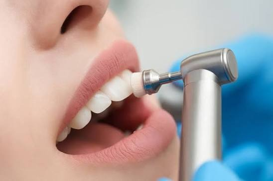
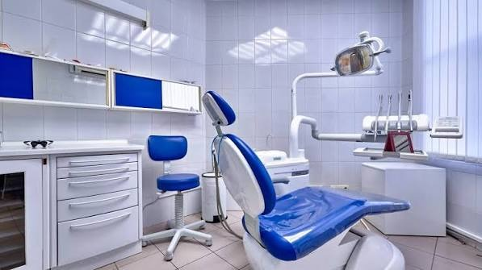
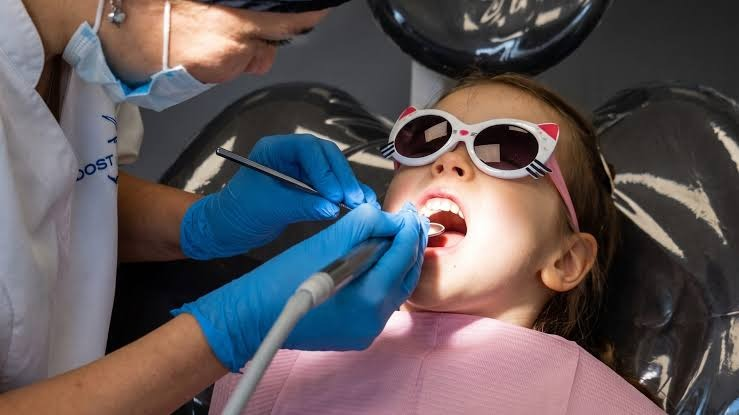
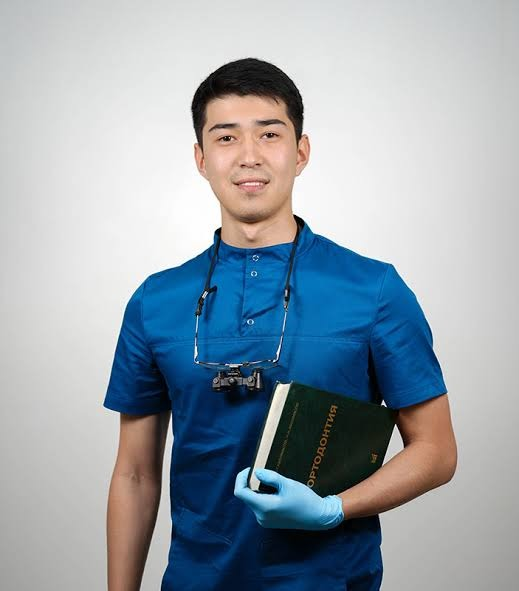

ЕмдеуЛечение
Кариес, пульпит, пломба. Тісті сақтауға бағытталған емдеу.Кариес, пульпит, пломбы. Лечение, направленное на сохранение зуба.
Life Stom Premium. Заманауи стоматология: тексеруден имплантацияға дейін. Асықпай, ұқыпты және әр пациентке жеке емдеу жоспарымен. Life Stom Premium. Современная стоматология: от осмотра до имплантации. Без спешки, бережно и с индивидуальным планом лечения для каждого пациента.

Емдеуден бұрын диагностика және түсінікті жоспар.Перед лечением диагностика и понятный план.
Асықпай, әр қадамды түсіндіріп қабылдаймыз.Принимаем без спешки и объясняем каждый шаг.
Кабинет пен құралдар таза күйде ұсталады.Кабинет и инструменты содержатся в чистоте.
Ересектерге де, балаларға да бір жерде көмек.Помощь и взрослым, и детям в одном месте.
Негізгі бағыттар. Нақты қызмет тізімі мен бағаны жазылу кезінде нақтылаймыз.Основные направления. Точный перечень услуг и цены уточняем при записи.
Кариес, пульпит, пломба. Тісті сақтауға бағытталған емдеу.Кариес, пульпит, пломбы. Лечение, направленное на сохранение зуба.
Тіс тасы мен қақты кетіру, жылтырату, күтім бойынша кеңес.Удаление камня и налёта, полировка, советы по уходу.
Жоғалған тістің орнына тұрақты, табиғи көрінетін шешім.Надёжная замена утраченного зуба, выглядящая естественно.
Коронка, винир. Тістің пішіні мен түсін қалпына келтіру.Коронки, виниры. Восстановление формы и цвета зубов.
Эмаль реңкін тістің жағдайын ескере отырып жақсарту.Осветление эмали с учётом состояния зубов.
Сүт тістерін емдеу, профилактика, дәрігермен алғашқы таныстық.Лечение молочных зубов, профилактика, первое знакомство с врачом.
Тіс қатарын түзету және тістеуді реттеу.Выравнивание зубов и коррекция прикуса.
Тіс жұлу және ауыз қуысындағы шағын операциялар.Удаление зубов и небольшие операции в полости рта.


Біз әр қадамды алдын ала түсіндіреміз: не істейміз, неге керек және қанша уақыт кетеді. Балалар қабылдауы тыныш өтеді, ал ересектер асықпай, өз жағдайына сай жоспар алады.Мы заранее объясняем каждый шаг: что делаем, зачем это нужно и сколько времени займёт. Приём детей проходит спокойно, а взрослые получают неторопливую консультацию и план под свою ситуацию.

Бас дәрігер пациенттің жағдайын мұқият бағалап, түсінікті әрі сенімді емдеу жоспарын ұсынады. Әр шешім алдын ала түсіндіріледі.Главный врач внимательно оценивает состояние пациента и предлагает понятный и надёжный план лечения. Каждое решение объясняется заранее.
WhatsApp арқылы жазасыз немесе 2ГИС-тен хабарласасыз.Пишете в WhatsApp или связываетесь через 2ГИС.
Дәрігер жағдайыңызды қарап, диагностика жүргізеді.Врач осматривает и проводит диагностику.
Емдеу нұсқалары мен кезеңдерін түсіндіреді.Объясняет варианты и этапы лечения.
Келісілген жоспар бойынша ұқыпты жұмыс.Аккуратная работа по согласованному плану.
Үйдегі күтім және келесі тексеру уақыты.Домашний уход и срок следующего осмотра.
Күнделікті өмірде жиі қойылатын сұрақтарға жауаптар.Ответы на частые вопросы, которые возникают каждый день.
Бұл жалпы ақпарат. Ол дәрігердің тексеруін алмастырмайды.Это общая информация. Она не заменяет осмотр у врача.
Күніне екі рет, кемінде екі минут, құрамында фторы бар пастамен тазалаңыз. Қылы жұмсақ щетка таңдаңыз. Тіс аралығына флоссты күн сайын қолданыңыз. Щетканы шамамен үш айда бір ауыстырыңыз.
Чистите зубы дважды в день не меньше двух минут пастой с фтором. Выбирайте щётку с мягкой щетиной. Пользуйтесь флоссом для межзубных промежутков каждый день. Меняйте щётку примерно раз в три месяца.
Ауырмаса да, кемінде жарты жылда бір рет. Кариес пен қызыл иек қабынуы жиі ауырсынусыз басталады, ал ерте кезеңде емдеу оңай және тез.
Даже если ничего не болит, не реже раза в полгода. Кариес и воспаление дёсен часто начинаются без боли, а на раннем этапе лечение проще и быстрее.
Тіс қағындағы бактериялар қантты қышқылға айналдырып, эмальді баяу бұзады. Қанттың мөлшерінен гөрі оны жеу жиілігі маңыздырақ: күні бойы тәттіні жиі жеу эмальге қауіпті.
Бактерии в зубном налёте перерабатывают сахар в кислоту, которая постепенно разрушает эмаль. Важнее не количество сахара, а частота: частые сладкие перекусы в течение дня опаснее.
Көбіне себебі тіс қағы мен тіс тасынан болатын қабыну (гингивит). Тазалауды тоқтатпаңыз және дәрігерге көрініңіз. Уақытында көмек көрсетілсе, қабыну қайтымды.
Чаще всего причина в воспалении из-за налёта и камня (гингивит). Не прекращайте чистку и обратитесь к врачу. При своевременной помощи воспаление обратимо.
Алғашқы тіс шыққанда немесе бір жасқа дейін. Сүт тістері де емделеді, өйткені олар тұрақты тістердің орнын сақтайды. Үш жасқа дейін фторлы пастаны күріш түйіріндей, 3–6 жаста бұршақтай мөлшерде қолданыңыз.
Когда прорезался первый зуб или до года. Молочные зубы тоже лечат, ведь они сохраняют место для постоянных. До трёх лет используйте фторсодержащую пасту размером с рисовое зёрнышко, в 3–6 лет размером с горошину.
Эмаль жұқарған, қызыл иек шегінген немесе кариес басталған болуы мүмкін. Себебін тек тексеру көрсетеді, сондықтан ұзақ күтпей дәрігерге жазылыңыз.
Возможно, истончилась эмаль, отступила дёсна или начался кариес. Причину покажет только осмотр, поэтому не откладывайте визит к врачу.
Форманы толтырыңыз, WhatsApp-та дайын хабарлама ашылады. Администратор сізбен байланысып, уақытты растайды.Заполните форму, и в WhatsApp откроется готовое сообщение. Администратор свяжется с вами и подтвердит время.
Мекенжай, жұмыс уақыты және пікірлер 2ГИС картасында. Сұрағыңыз болса, WhatsApp-қа немесе Instagram-ға жазыңыз.Адрес, часы работы и отзывы на карте 2ГИС. Есть вопрос? Напишите в WhatsApp или Instagram.